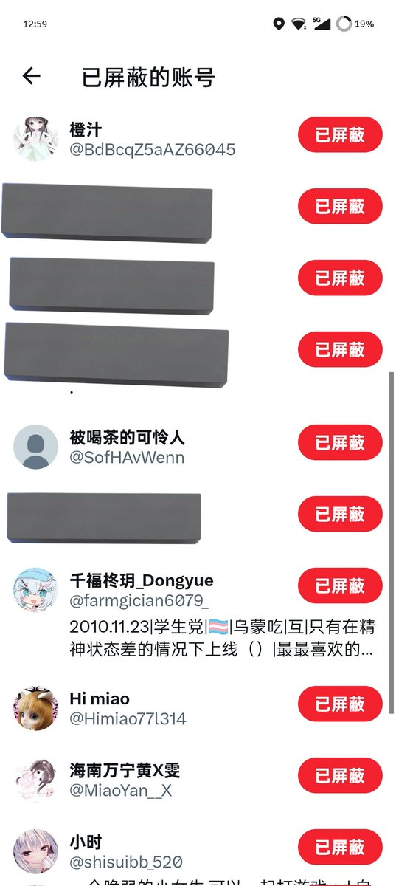
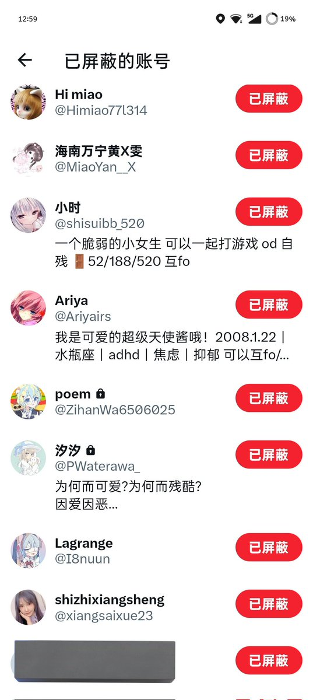
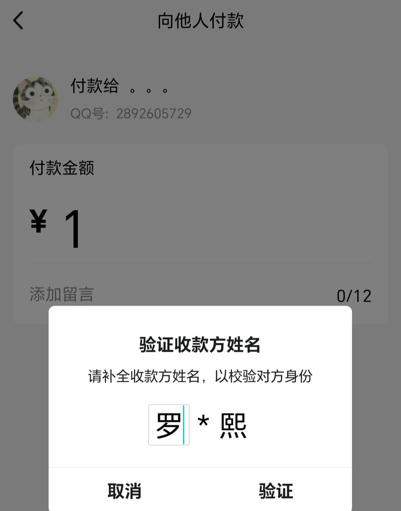
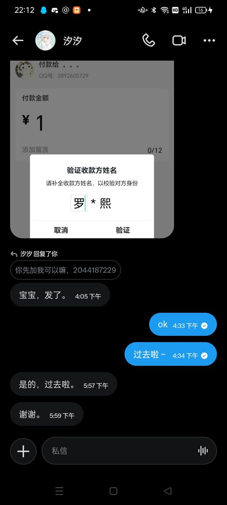
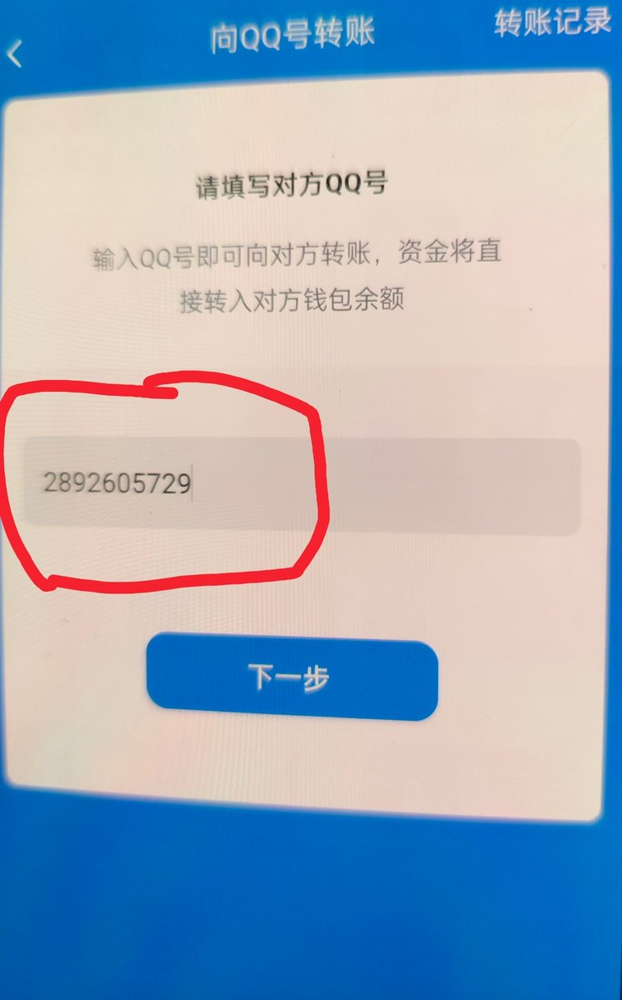

@CCA8798suki @PWaterawa 这些全是他的账号






罗*熙你个傻逼，冒认别人领奖
大家一定要警惕骗局
原本是@PWaterawa中的我的奖(正主)
这个傻逼用自己注册的仿冒账号@PWaterawa_主动冒认成功领走了奖
我今天在此把整件事情挂出来
最近大家有搞抽奖的一定要警惕！！！！
一定要确认id是否一致！！！
图里有他的QQ号和大致名字
小心这个傻逼惯犯！！ https://t.co/jWHpBTd87z https://t.co/0wmeSpKSFF
大家一定要警惕骗局
原本是@PWaterawa中的我的奖(正主)
这个傻逼用自己注册的仿冒账号@PWaterawa_主动冒认成功领走了奖
我今天在此把整件事情挂出来
最近大家有搞抽奖的一定要警惕！！！！
一定要确认id是否一致！！！
图里有他的QQ号和大致名字
小心这个傻逼惯犯！！ https://t.co/jWHpBTd87z https://t.co/0wmeSpKSFF